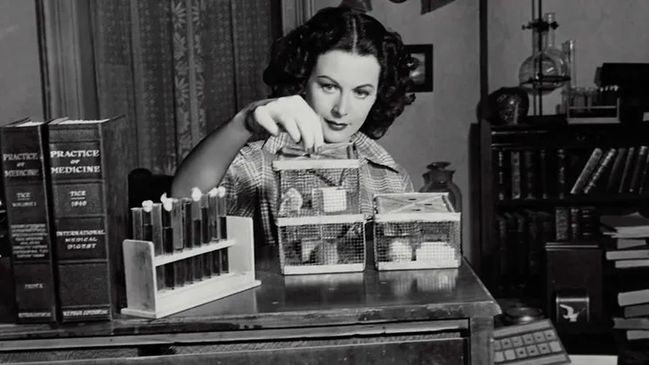
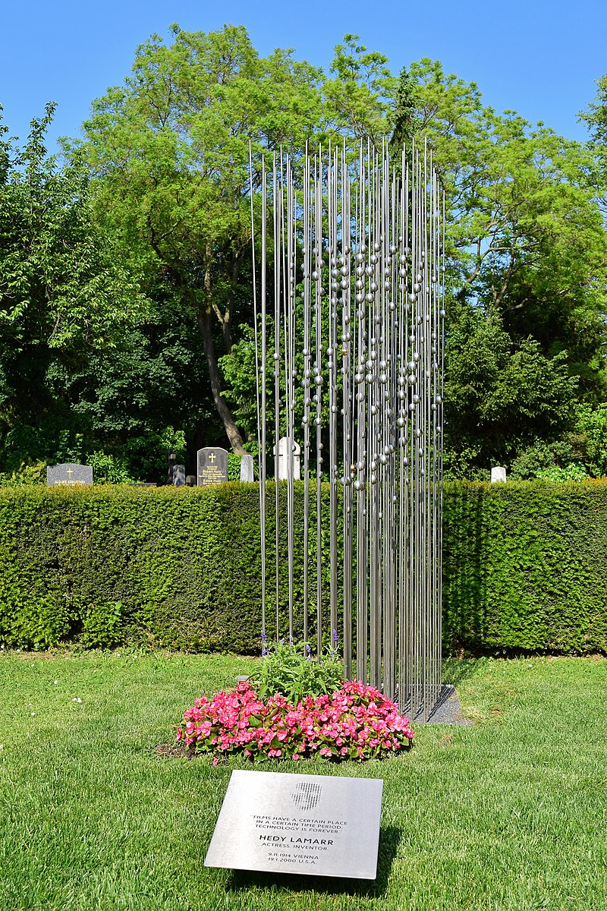

Família
Nascida em 9 de novembro de 1914, em Viena (Áustria), Hedwig Eva Maria Kiesler e era filha de judeus, e já mostrava interesse em máquinas e invenções na infância. Filha de um diretor bancário, que inspirava o olhar curioso sobre os funcionamentos interno das máquinas. E de uma pianista de concertos que a fez embarcar no mundo do piano e do bale durante a adolescência. Hedy passou a infância entre o mundo das invenções e o mundo das artes.
Aos 16 anos, em 1930 em Berlim, foi descoberta por Max Reinhardt, que a orientou em seus estudos de atuação e conquistou sua primeira participação em um filme. Em 1933 aos seus 18 anos, Hedy estrelou o polêmico longa-metragem “Ecstasy”, filme filmado em Praga, que gerou varias polêmicas na época, pois foi tido como o primeiro filme na história a exibir uma cena de orgasmo.
Casamento
 Conheceu Friedrich Mandl, que era dono de uma fábrica de armas e munições militares, sendo ele um dos homens mais influentes do país. Em 1933, mesmo ano de lançamento do seu filme, Hedy se casou com Mandl. Um casamento onde Mandl era controlador, abusivo, Hedy se afastou dos cinemas, se tornando mais caseira, trancada em sua mansão. Em seus relatos, ela conta: “Eu sabia muito em breve que nunca poderia ser atriz enquanto fosse sua esposa. Ele era o monarca absoluto no casamento. Eu era como uma boneca. Eu era como uma coisa, algum objeto de arte que tinha que ser guardado – e preso – sem mente, sem vida própria.”
Conheceu Friedrich Mandl, que era dono de uma fábrica de armas e munições militares, sendo ele um dos homens mais influentes do país. Em 1933, mesmo ano de lançamento do seu filme, Hedy se casou com Mandl. Um casamento onde Mandl era controlador, abusivo, Hedy se afastou dos cinemas, se tornando mais caseira, trancada em sua mansão. Em seus relatos, ela conta: “Eu sabia muito em breve que nunca poderia ser atriz enquanto fosse sua esposa. Ele era o monarca absoluto no casamento. Eu era como uma boneca. Eu era como uma coisa, algum objeto de arte que tinha que ser guardado – e preso – sem mente, sem vida própria.”
Nos primeiros anos do casamento, Mandl se manteve empenhado a proteger a Áustria da expansão do nazismo. Seu principal cliente e aliado era Mussolini, líder do Partido Nacional Fascista. Porem em meio ao rumo que a politica estava tomando, Mandl começou a negociar com os alemães, embora incialmente se opusesse a Hitler, Mussolini oficialmente se aliou à Alemanha, transformando em uma das principais potências do Eixo.
Hollywood
Em 1937, insatisfeita com o casamento e com os rumos do país, ela fugiu da Áustria para Londres, na Inglaterra. De lá, partiu para os EUA, onde retomou a carreira de atriz de cinema. Em Hollywood após conhecer Louis B. Mayer, um famoso chefe de estúdio da MGM, Hedy adotou o nome artístico de Hedy Lamarr.
A carreira em Hollywood despontou. Em uma rara entrevista na TV de 1969, ela fala um pouco mais sobre sua rotina de trabalho da época: houve momentos em que chegou a filmar três filmes simultaneamente, correndo de um set para o outro. Ela contracenou com grandes nomes da época, como Clark Gable e Judy Garland e, anos depois, ganhou uma estrela na Calçada da Fama de Los Angeles.
Apesar do sucesso nas telonas, a situação da guerra ainda a preocupava, sobretudo porque sua mãe ainda permanecia na Áustria, agora sem proteção de Mandl (que em tempo havia fugido para o Brasil).
Tecnologia
Enquanto enfrentava burocracias legais para levar a mãe aos EUA, Hedy decidiu tomar para si a missão de tornar a ofensiva dos Aliados contra o nazismo mais eficaz. Por causa de sua experiência como esposa de Mandl, sabia que, de todos os armamentos produzidos, os torpedos eram o que tinham maiores problemas. Além de imprecisos, era também suscetíveis à interferência do sinal por navios inimigos.
 Enquanto Hedy e George Antheil, famoso compositor no qual ela havia se tornado amiga, faziam um dueto no piano. Lamarr percebeu que se o emissor e o receptor mudassem constantemente de frequência, os dois poderiam se comunicar, sem serem interceptados.
A ideia de manter a sincronia mesmo com ambos tocando teclas diferentes foi transplantada para a tecnologia de torpedos submarinos. Na época, esse tipo de armamento era controlado por sinais abertos de rádio. Para conter os ataques, a marinha alemã provocava congestionamento na frequência usada na comunicação dos submarinos, causando perda de conexão.
 Já com o sistema concebido por Lamarr, o sinal fica “pulando” de um canal para o outro, tornando-o imune a essa estratégia de defesa. Se fosse implementada, essa tecnologia colocaria as forças aliadas em grande vantagem.
Já com o sistema concebido por Lamarr, o sinal fica “pulando” de um canal para o outro, tornando-o imune a essa estratégia de defesa. Se fosse implementada, essa tecnologia colocaria as forças aliadas em grande vantagem.
O sistema de saldo em frequência chegou a ser patenteado em 1942, mas não foi usado durante a Segunda Guerra Mundial. O fato de Lamarr ser uma jovem mulher famosa pesou para que o alto comando dos EUA simplesmente ignorasse suas ideias.
O projeto de Lammar só ficou conhecido em 1962, quando o aparelho passou a ser usado por tropas militares do EUA em Cuba, durante a Crise dos Mísseis e, posteriormente, durante a Guerra do Vietnã. Porém a patente já havia expirado, antes que Lamarr pudesse ganhar qualquer dinheiro com ela. Hedy e George só forem reconhecidos oficialmente em 1997, quando recebeu uma menção honrosa do governo americano por ter aberto novos caminhos da eletrônica.
 A ideia do aparelho de Lamarr e Antheil serviu de base para a tecnologia moderna de comunicação, sendo de fundamental importância no desenvolvimento do chamando “espectro alargado”, ou em termos técnicos: Frequência de Salto de Espectro de Propagação (FHSS), uma forma de utilizar varias frequências de rádio sem interferências, na qual se baseiam redes sem fios, tal como COFDM usada em conexões de Wi-Fi e CDMA, usada em telefones celulares.
Hedy morre aos 85 anos em Orlando, no dia 19 de janeiro de 2000. Como seu desejo, suas cinzas foram espalhadas dos Bosques de Viena e em 2014, um túmulo foi construído no Cemitério Central de Viena. Após sua morte, ela recebeu diversas homenagens póstumas, como um Doodle na homepage do Google em 2015, onde marcou seus 101 anos de nascimento. Assim como Hedy teve um asteroide batizado com seu sobrenome artístico.